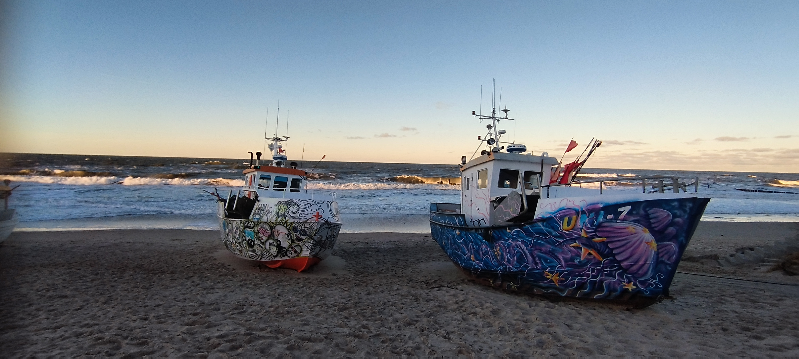
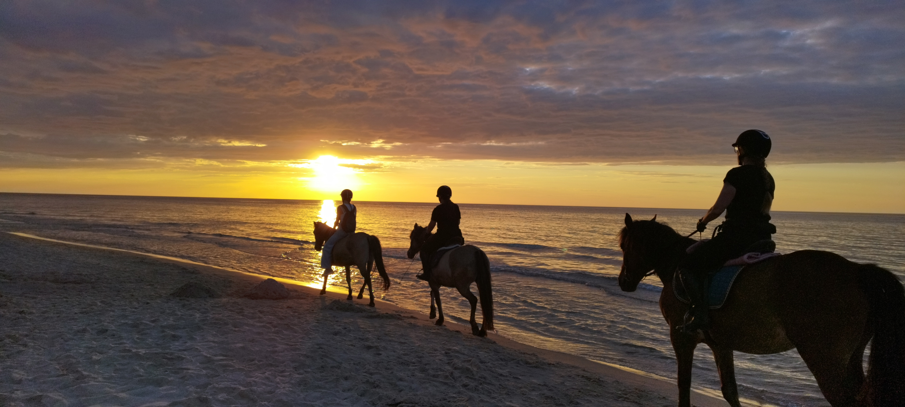
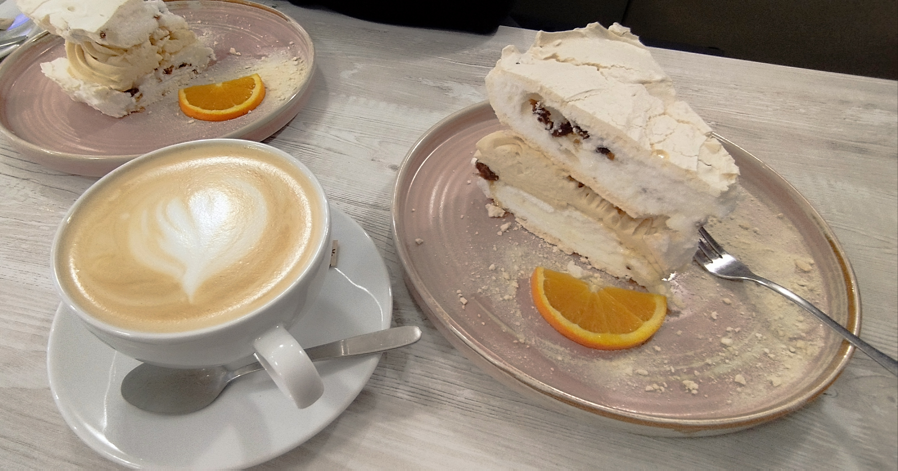
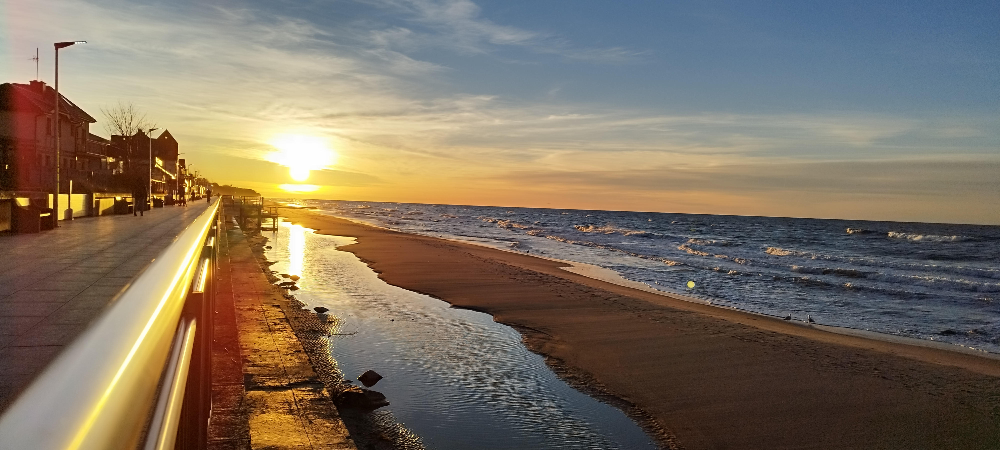

Nadmorskie smaki
Coś prostego po spacerze.
Biały Dom Sarbinowo
Plaże, spacery, dobre jedzenie i pomysły na spokojny wieczór nad morzem
Okolica w skrócie
Sarbinowo i Chłopy można odkrywać bez pośpiechu: rano wybrać plażę, w ciągu dnia ruszyć na spacer lub rower, a wieczorem znaleźć miejsce na spokojną kolację. Poniżej najważniejsze pomysły — szczegóły pojawiają się dopiero wtedy, gdy ich potrzebujesz.

01 · Morze
Szeroki horyzont, piasek i ścieżki biegnące wzdłuż brzegu pozwalają zacząć dzień spokojnie albo zakończyć go przy zachodzie słońca. Każda pora pokazuje wybrzeże z innej strony.

02 · Chłopy
Łodzie stojące na piasku tworzą charakterystyczny obraz Chłopów i przypominają o rybackiej tradycji miejscowości. To dobry kierunek na niespieszny spacer i kilka nadmorskich kadrów.

03 · Razem
Zachód słońca, spacer przy wodzie i chwila bez planu często wystarczą, by wieczór zapamiętać na długo. Można zostać na plaży albo połączyć spacer z późniejszą kolacją.
04 · Smaki
W okolicy można szukać zarówno prostych nadmorskich smaków, jak i miejsca na kawę lub deser. Zamiast jednej listy warto wybrać kategorię pasującą do planu dnia.
Coś prostego po spacerze.

Spokojna przerwa w ciągu dnia.

Zakończenie dnia bez pośpiechu.

05 · Po zachodzie
Wieczór może oznaczać spacer po promenadzie, sezonowe wydarzenie albo spokojne miejsce na zakończenie dnia. Plan najlepiej dopasować do nastroju i aktualnej oferty.
06 · Na dwóch kołach
Rower pozwala połączyć Sarbinowo i Chłopy w jedną spokojną wycieczkę. Trasę można skrócić, wydłużyć albo przerwać wtedy, gdy znajdzie się dobre miejsce na odpoczynek.

Twój spokojny punkt startowy
Wybierz termin, obejrzyj pokoje i zapytaj o szczegóły bezpośrednio.